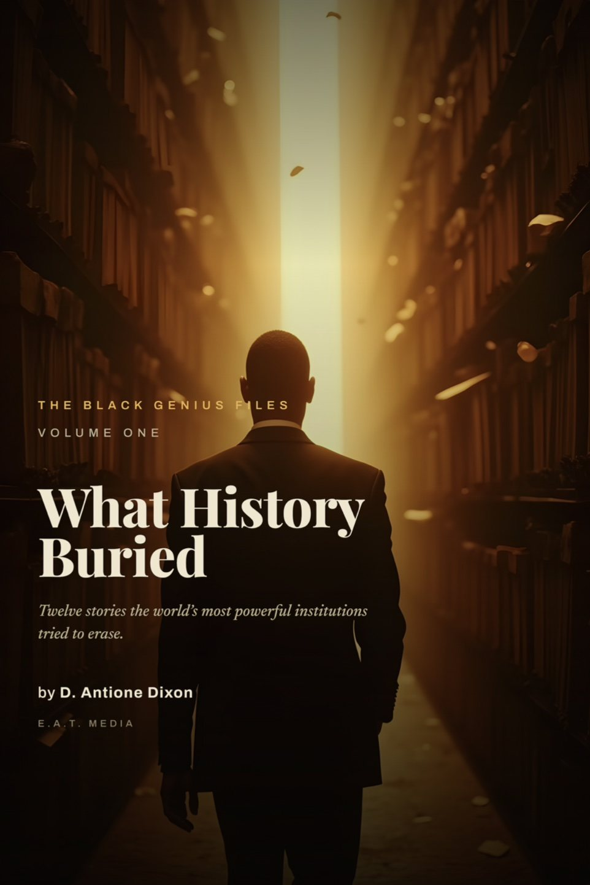

Free · Five Days · Starts The Moment You Scroll
Five days. Five things you were taught. Five primary documents that say otherwise. One takes about three minutes.
By Day Five you will not be able to read a textbook the same way.
0 OF 5 DECLASSIFIED
The Curriculum
Nothing is gated. Open one a day if you want the discipline — or read all five now if you can't wait. Your progress is remembered on this device.
CHALLENGE COMPLETE
Five myths down. Seven case files to go.
You have now read five corrections against the primary record. The book carries all twelve — with the citations, the documents, and what each erasure cost.
PREFER IT PACED?
Take the Recovery List instead
Chapter 1 lands in your inbox now — the full Mansa Musa case file — and the rest of the archive follows. Same corrections, delivered rather than binged.
FREE CHAPTER, DELIVERED TO YOUR INBOX.

What History Buried
The Black Genius Files, Vol. 1 — twelve case files reopened, corrected, and sourced.